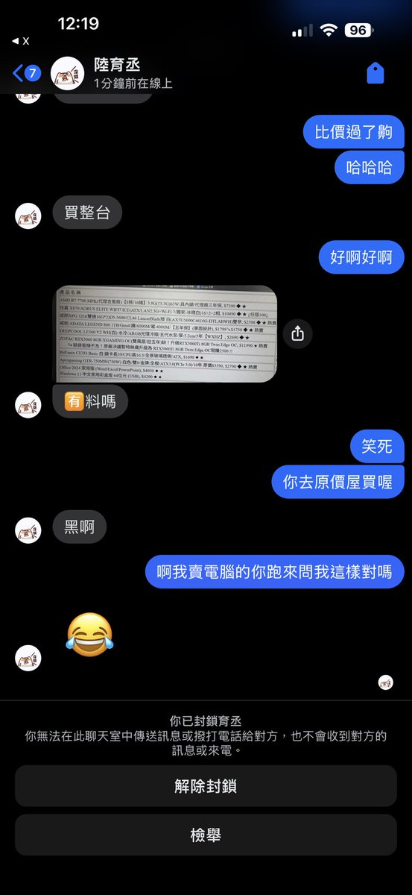

山田リョウ⛩️
@Yamada_Ryoooo
@eason11210 7700上x870e是要干什么…还有那个5600c46…

一陞不是醫生
@eason11210
《抽獎》
對 抽3070TI 一張
送東西才會讓人理我對吧（X
啊我要賣台主機
Intel i5-14400F
Darkflash DN360D
Gigabyte B760 DS3H AX DDR4
D4-3200 32G
1TB Gen4 M.2
RTX5060Ti-16G
650W 80plus
DS900
Windows 11 Pro
36000元
原價屋參考價40600
抽獎方式很重要！
追蹤我 留言 按讚 分享 https://t.co/lgm45l2k1v